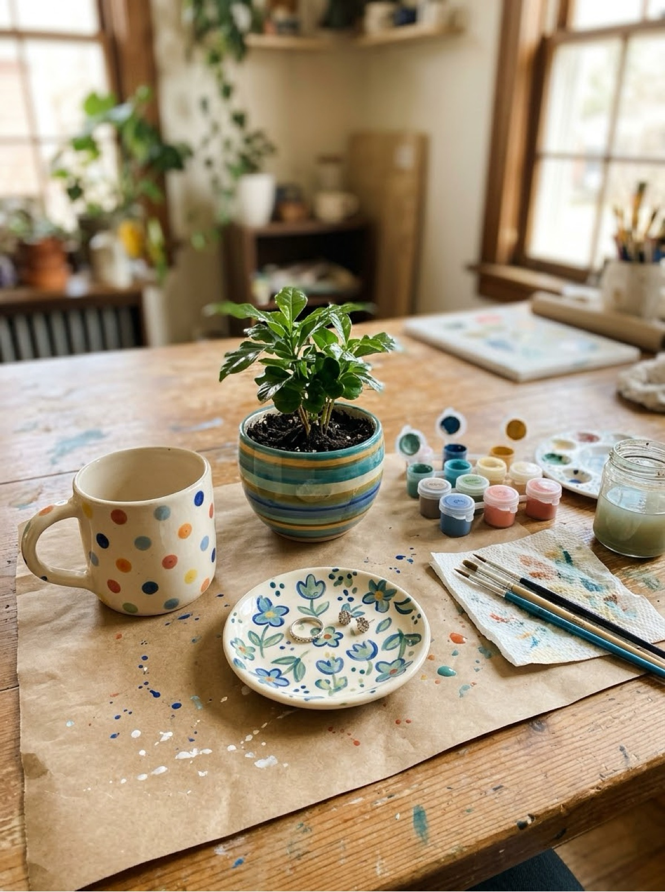
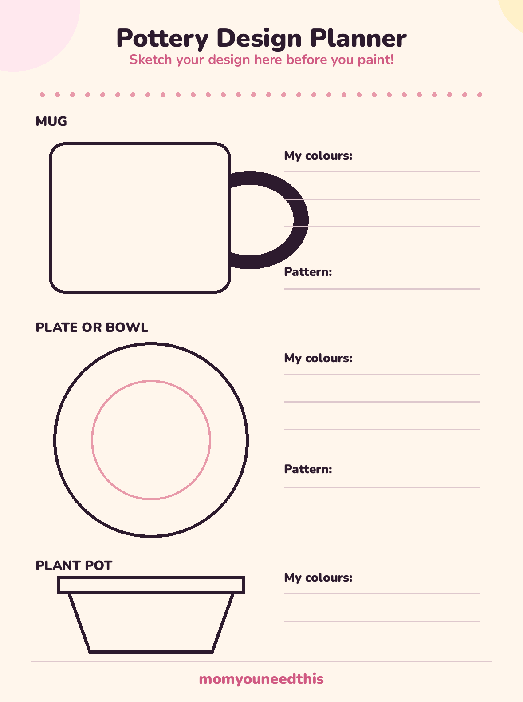

Pottery Painting Ideas 15 Designs for Mugs, Plates, Plant Pots & More
Pottery painting ideas that actually work at a kitchen table: fifteen simple designs grouped by the piece you are painting — mugs, plates and bowls, plant pots, coasters and tiles — each with the order to paint it in. You will also find the supplies list, four beginner techniques, and straight answers on paints, drying and food safety.
Last updated: October 21, 2026

Quick Answer
Start with a bisque (unglazed) blank from a craft store, acrylic craft paint, and one of the simple designs below — dots, speckles, rainbows and tape stripes are the most forgiving. Plan the design on the free planner first, paint in thin layers, let it dry 24 hours, and seal decorative pieces with clear acrylic sealer. Home-painted pottery is decorative unless it is glazed and kiln-fired, so keep paint away from food surfaces.
At a Glance
- Ages: kids 4+ with a grown-up; designs scale up for older kids and adults
- What you get: 15 design ideas, 4 beginner techniques, free design planner printable
- Time: 20–45 minutes of painting, plus 24 hours drying before sealing
- Cost: ideas and planner are free — no signup, no email
🖨️ Plan It First: The Free Pottery Design Planner
Pottery forgives a lot, but it does not forgive everything — paint is hard to wipe off a curved, thirsty surface once it is down. Two minutes of planning saves most pieces. Print the planner and sketch your design onto the mug, plate and plant pot outlines first: where the colours go, where the pattern sits, what you will paint first. It is also the easiest way to paint with kids — they colour their plan, then copy it onto the real piece.

🏺 Download Your Free Pottery Design Planner
Mug, plate and plant pot outlines with space for your colours and patterns
⬇️ Download Free Planner 🖨️ Print🎁 Free printable for pottery painters of all ages
🧰 What You Need: Blanks, Paints & Basics
The blank. Craft stores sell unglazed ceramic blanks — called bisque — in every shape on this page: mugs, plates, bowls, plant pots, tiles and more. Bisque is the easiest surface for beginners because it is slightly rough and drinks the paint in evenly. A glazed, shiny piece from a thrift store can work too, but paint slides on it: use enamel acrylic or a paint labelled for glass and ceramic, and expect to follow its curing instructions carefully.
The paint. For decorative bisque pieces, standard acrylic craft paint is all you need — cheap, quick-drying, and available in every colour. Shake it well and use it straight from the bottle; thinning with water makes it streaky on ceramic. You will also want a few brushes (a flat one for bases, a round one for details), a cup of water, paper towel, painter's tape for stripes, a pencil for sketching, and a clear acrylic sealer spray or brush-on for the finish. A pencil line on bisque disappears under paint and can be erased before you start — your cheapest undo button.
✋ Before You Paint: Five-Minute Prep
A clean, dry, planned piece is 90% of a good result. Run through these steps once and they become habit:
- Wash and dry the piece. Bisque collects dust and skin oils, and paint lifts off both. Wash with water and a drop of dish soap, rinse, and let it dry completely — at least an hour, or overnight if you washed the inside too.
- Sketch the design in pencil. Draw straight onto the pottery, lightly. On your planner you decided where things go; now transfer the big shapes — the rainbow arc, the stripe lines, the face. Pencil erases off bisque with a dry eraser if you change your mind.
- Paint background first, details last. Base coats and big areas go down first and need to dry before details sit on top — usually 15 to 20 minutes between layers. Working out of order is the number one cause of smeared designs.
- Use thin coats. Two thin coats look smooth; one thick coat looks lumpy and cracks as it dries. If the first coat looks streaky, that is normal — the second coat fixes it.
- Leave the piece alone to dry. Set it somewhere it will not be touched for 24 hours before sealing. A cupboard top or a tray in a quiet corner works; the middle of the kitchen table does not.
🏺 Pottery Painting Ideas for Mugs
Mugs are the most-painted blank for a reason: small, useful, and forgiving. Start with the easy pottery painting ideas — dots, speckles and tape stripes forgive wobbly hands and still look deliberate.
Rainbow arc mug. Paint three or four arcs in a row across the front, like a flattened rainbow, using the side of a flat brush. Leave the rest white. Simple, cheerful, and done in ten minutes.
Polka dot mug. Dip the eraser end of a pencil in paint and stamp dots — evenly spaced, or scattered like confetti. A second colour of smaller dots (use a cotton bud) fills the gaps.
Initial mug. One big letter in the centre, painted with a round brush or written with a paint pen if you have one. Add a ring of tiny dots or dashes around the rim to finish it.
Speckled mug. Paint a solid base colour, let it dry fully, then flick a toothbrush loaded with a contrasting colour over the surface for a speckled, kiln-style finish. Do this one over newspaper — speckles travel.
🪴 More Pottery Painting Ideas: Plates, Pots, Coasters & Tiles
Handprint plate. A painted handprint in the centre, the child's name and the year around the rim. Grandparent gold — and the plate is decorative, which suits it perfectly. Press the hand down once, firmly, and lift straight up; wiggling is what smears prints.
Citrus rim plate. Paint orange or lemon slices around the rim: a circle of colour, a thinner pale ring inside it, and wedge lines from the centre. The middle of the plate stays plain, which keeps the design looking clean.
Rainbow plate. Concentric arcs from one edge, like the mug design stretched wide. Works especially well in soft colours on a small plate or saucer.
Speckled soup bowl. A solid colour inside, speckles outside — or the reverse. Bowls are decorative-or-dry-goods pieces at home, so treat them as display pieces or use them for wrapped treats and fruit you peel.
Terracotta plant pots. Unglazed terracotta is the friendliest surface of all. Try stripes around the rim, a row of white dots on the natural clay, a painted face with the plant as its hair, or colour-blocked halves in two colours. Seal the outside if the pot will live outdoors.
Rainbow plant pot. Vertical drips of colour running down from the rim — load a brush well and let gravity do the design. Stand the pot upside down on newspaper and let each colour dry before adding the next.
Chalkboard-look pot. Paint the pot matte black (or dark green), then write the herb's name on it in white paint pen, chalk-style. Looks like the expensive garden-centre version.
Pattern tiles and coasters. Tiles are flat, cheap practice: try a simple repeating pattern — dots in rows, a gingham check made with two layers of translucent stripes, or a single bold flower in the centre. A set of four matching tiles makes a genuinely good gift.
🎨 Four Techniques That Make Designs Look Polished
Sponging. A torn piece of kitchen sponge, dabbed in paint and blotted once on paper, gives a soft mottled base that hides every brush mark. It is the fastest way to cover a big piece evenly, and toddlers can do it.
Tape resist. Stick painter's tape where you want clean stripes or a bare band, paint over everything, and peel the tape off while the paint is still slightly wet. Crisp lines, zero skill required — the single best trick on this page.
Dotting. Pencil erasers, cotton buds, and the wrong end of a paintbrush are precision tools in disguise. Dots in rows make borders; dots in clusters make flowers; one dot with a tail makes a raindrop or a petal.
Splatter. The speckled finish from the mug design, scaled up. Thin the paint very slightly, load an old toothbrush, and run your thumb across the bristles. Always splatter last, always over newspaper, and always on a piece that is otherwise finished and dry.
⚠️ Drying, Sealing & the Food-Safety Truth
Acrylic on pottery feels dry in under an hour, but give every piece a full 24 hours before you seal it or stack it — the paint underneath the surface is still curing, and sealing too early traps moisture and clouds the finish. A clear acrylic sealer (spray is easiest) adds shine and protects against light scratches and fingerprints. Sealed pieces are hand-wash-only, and honestly, display pieces mostly need dusting.
Now the part too many craft pages skip: home-painted pottery is not food-safe. Acrylic paints and craft sealers are not made or tested for contact with food and drink. Food-safe pottery gets that way with food-safe glaze fired in a kiln at high temperature — which is what paint-your-own-pottery studios do. So at home, paint pieces for decoration, for plants, for pencils and dry storage, or keep paint on the outside of a mug below the rim where lips do not touch, and around the outer edge of plates. That is not a compromise — most painted pottery anyone owns lives exactly that way, looking lovely on a shelf or windowsill.
🎨 More Fun for Moms & Kids
🎨 Painting Ideas Hub
Every painting project on the site in one place, sorted by age and type. Browse all painting ideas.
🌈 Watercolour Painting Ideas
Gentle washes and beginner projects that pair beautifully with pottery days. Try watercolour.
🦋 Easy Face Painting Ideas
Eight step-by-step designs for parties and dress-up days. See the designs.
👆 Finger Painting
The toddler end of painting: taste-safe recipes and zero-stress setup. Start finger painting.
🔢 Paint by Numbers
Printable sets for painters who like a plan. Browse the sets.
✂️ Crafts for Kids
More making projects — paper crafts, seasonal crafts and simple builds. Browse crafts.
❓ Frequently Asked Questions
What is the best paint for pottery at home?
For decorative pieces, regular acrylic craft paint is the easiest choice: it sticks to unglazed ceramic (bisque), dries fast, and cleans up with water. For glazed, shiny pieces — like a thrifted mug — use enamel acrylic or paints labelled for glass and ceramic, which are made for slick surfaces, and follow the label's curing directions. Paint-your-own-pottery studios use glazes that are fired in a kiln; that is a different finish from anything that comes out of a home oven.
Is painted pottery food safe?
Only if it is glazed with a food-safe glaze and kiln-fired — that is what studios do, and it is the standard for surfaces that touch food and drink. Home acrylic paints and craft sealers are not made or tested for food contact, so treat home-painted pieces as decorative, use them for dry storage like pencils or wrapped treats, or keep paint on the outside of a mug below the rim and on the underside or outer edge of plates. The pottery painting ideas on this page are all planned as decorative pieces for exactly this reason. When in doubt, decorate it, don't eat off it.
Do I need a kiln for pottery painting?
No — not for decorative pieces. Acrylic and ceramic paints air-dry at home, and a coat of clear acrylic sealer adds shine and a little protection against scratches. A kiln is only needed for true glaze finishes and for making a piece food safe. If you fall in love with the hobby, a local studio will usually fire a piece you painted with their glazes for a small fee.
How long does pottery paint take to dry?
Acrylic paint on pottery is usually dry to the touch in 20 to 60 minutes, depending on how thickly it goes on. Give pieces a full 24 hours before sealing or stacking them, and if your paint label gives curing instructions — some ceramic and enamel paints ask for days of air curing or a low oven bake — follow the label, because that is what makes the finish last.
Can kids paint pottery?
Yes — pottery painting is one of the most kid-friendly crafts there is, because the piece is already made and the paint is the whole job. Kids around 4 and up can sponge, dot and splatter their own small piece with a grown-up nearby; older kids can plan a design on paper first with the free planner on this page. Expect the first piece to be gloriously over-painted — that is exactly what a first piece should be.